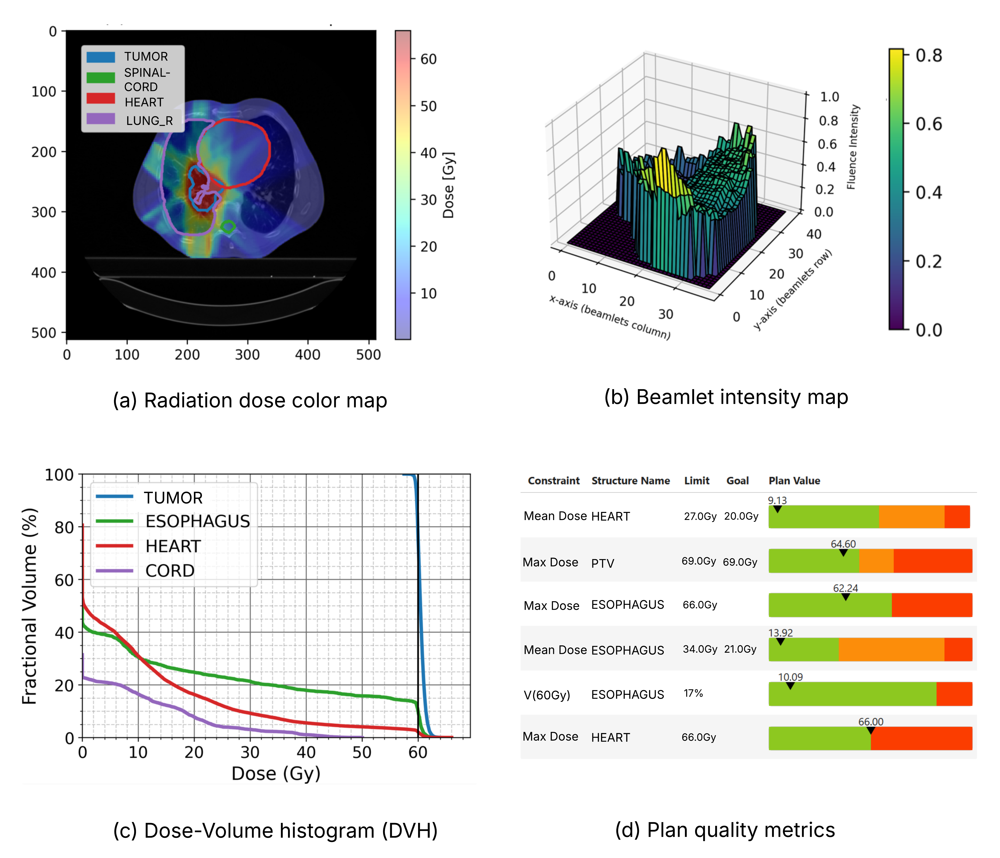

What is PortPy?¶

PortPy, short for Planning and Optimization for Radiation Therapy, is an open-source Python library designed to advance cancer radiotherapy treatment planning optimization. Radiotherapy plays a critical role in treating over half of all cancer patients, whether as a standalone treatment or in combination with surgery, chemotherapy, or immunotherapy. It works by delivering high-energy radiation beams to tumors, aiming to destroy cancerous cells while minimizing damage to the surrounding healthy tissues. Since every patient has a unique anatomy, the radiation beam’s shape, angle, and intensity must be carefully customized. The objective is to maximize tumor dose while minimizing exposure to nearby organs at risk—a challenge that translates into solving large-scale, patient-specific mathematical optimization problems.
PortPy aims to accelerate research in this interdisciplinary field by providing tools and algorithms to model and solve these complex optimization problems, as well as to visualize and quantitatively evaluate the resulting treatment plans (see image below).

🚀 PortPy Main Features¶
-
IMRT/VMAT Planning Optimization (including AI):
Includes support for IMRT fluence map optimization and leaf sequencing (see notebook), VMAT direct aperture optimization (see notebook), AI-based dose-prediction IMRT (see notebook) and VMAT (see notebook) planning. -
Integration with Commercial TPS:
PortPy outputs IMRT/VMAT plans in DICOM-RT format which can be exported into commercial TPSs (see notebook). For Eclipse TPS users: -
Benchmark Datasets:
Provides access to a curated dataset of 100 lung cancer patients with all necessary components for treatment planning optimization (beamlet, voxel, pre-computed dose influence matrix). IMRT plans generated using our in-house automated planning system, ECHO, are included for benchmarking -
Globally Optimal IMRT/VMAT Plans:
Implements slow but exact algorithms (e.g., Mixed-Integer Programming) to compute globally optimal plans, useful for benchmarking and validating heuristic algorithms.
📢 News¶
-
[PortPy v1.1.1 released] The following features have been added:
- Prostate dataset added: 129 Prostate patients have been added and is now hosted on HuggingFace. This dataset expands PortPy’s resources for advancing radiotherapy research(see notebook).
- Enhanced data explorer: Added new methods to DataExplorer for accessing data directly from Hugging Face.
- Faster optimization: Eliminated redundant constraints for faster optimization.
-
[PortPy v1.1.0 released] The following features have been added:
- Eclipse users can use their own dataset: For more info, see notebook.
- Lung benchmark dataset expanded: Lung dataset expanded to 100 patients and is now hosted on HuggingFace, making it easier to access and use them in your research (see notebook).
- VMAT column generation algorithm added: It finds a "warm start" (i.e., good but not neceassirily optimal) solution quickly for the current VMAT SCP (Sequential Convex Programming) optimization algorithm (see notebook).
- Enhanced visualization: The evaluation table has been improved for better readability and analysis (see notebook).
🛎️ Join Our Mailing List¶
- Subscribe to receive news about major releases and new features.